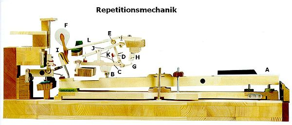
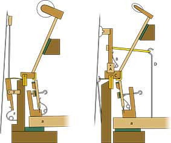
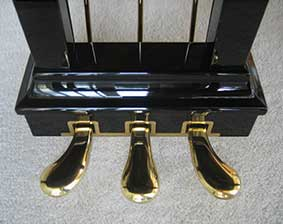

Klaviere gehören zu den komplexesten Instrumenten. Auch wenn sich sehr viele Musikerinnen und Musiker einig sind, dass die Violine eine der schwersten Instrumente ist, gehören Klaviere in ihrem Aufbau zu den am schwersten zu bauenden.
Die besonderheit an Klavieren im vergleich zu anderen Tasteninstrumenten (wie Orgeln), ist dass die einzelnen Töne je nach Tastendruck nicht nur unterschiedlich laut sind, sondern sogar unterschiedlich klingen können.
Während die Vorläufer des Klaviers (z.B. das Cembalo) diese Fähigkeit nicht besaß, wurde die Klaviermechanik seit dem Jahr 1698 bis ca. 1823 enorm weiterentwickelt. Und obwohl bis heute noch die Technik verfeinert wird, basiert die heutige Mechanik noch immer auf der Grundlage von 1823.
Der heutige Stand der Technik ist die 1821 von Sébastien Érard entwickelte Repetitionsmechanik. Die Repetitionsmechanik ist eine Weiterentwicklung der Stoßzungenmechanik und ist die heutzutage einzige noch in großem Maßstab produzierte Mechanik. Neben der Repetitionsmechanik ist heutzutage einzig noch die Wiener Mechanik relevant. Obwohl seit ca. 1910 nicht mehr produziert, wird von vielen Pianistinnen und Pianisten der einzigartige Klang dieser Mechanik hervorgehoben. Aufgrunddessen sind heute noch diverse Flügel mit Prellmechanik in Verwendung, da sie für manche Klavierstücke mit ihrem besonderen Klang besser zur Geltung bringen können
Da heutzutage eigentlich nur noch die Repetitionsmechanik relevant ist, wird im weiteren bei der Flügelmechanik nur auf diese eingegangen. Bei der Pianinomechanik wird in erster Linie nur auf die Unterdämper-Mechanik eingegangen.
Neben der eigentlichen komplexen Klaviermechanik, sind die wichtigsten Bauteile eines Klaviers (und der Mechanik) die Taste, Hammerkopf, Dämpfer und Saite. Wird die Taste gedrückt, hebt sich der Dämpfer und die Saite kann schwingen und den Ton produzieren. Beim Durchdrücken der Taste wird der Hammerkopf gegen die Saite geschlagen wodurch diese dann ihren Laut von sich gibt. Wird die Taste nur langsam gedrückt, schafft der Hammerkopf es nicht gegen die Saite und man hört (fast) keinen Ton. Solange die Taste gedrückt ist, bleibt der Dämpfer von der Saite gelöst und diese klingt weiter. Sobald man die Taste loslässt, drückt der Dämpfer wieder auf die Saite und sie verstummt.

CC BY-SA 3.0 - www.wikipedia.org - Bms72
Wird die Taste gedrückt (A), bewegt sich die sogenannte "Pilote" (B) welche dann die Hebegliedeinheit nach oben drückt und die Stoßzunge (D) gegen die Hammerstielrolle (E) stößt und den Hammerkopf (F) nach oben schleudert. Durch die spezielle Mechanik ist eine sehr schnelle Repetation (schnelles wiederholtes Drücken der selben Taste) möglich. Wird die Taste gedrückt, bleibt sie nämlich faktisch unter der Saite hängen. Der Anschlag geschieht nicht mehr durch Kraft, sondern nur noch durch den übrigen Impuls. Ein erneuter Anschlag ist durch diese Mechanik sogar möglich, ohne die Taste vollständig loszulassen. Dadurch bleibt sie Saite die ganze Zeit ungedämpft und wird zwei Mal angeschlagen.
Eine ausführliche Erklärung wie die Klaviermechanik funktioniert, findet man hier: Klaviermechanik auf Wikipedia

Public Domain Mark 1.0
Während bei einem Flügel der Tastenschlag intuitiv ist (der fordere Teil der Taste wird nach unten gedrückt, der hintere nach oben in Richtung Saite), muss bei Pianinos die Aufwärtsbewegung des hinteren Tastenteils, in eine Vorwärtsbewegung des Hammerkopfes verwandelt werden.
Dies wird mithilfe der "Hammernuss", einem Drehgelenk für den Hammer, umgesetzt. Ähnlich wie beim Flügel, wird der Hammer ausgekoppelt, noch bevor er die Saite erreicht, wodurch auch hier eine schnelle Repetition möglich ist. Der Anschlag geschieht dann nicht mehr mit der Kraft sondern über die bestehende Flugbewegung.
Eine ausführliche Erklärung wie die Klaviermechanik funktioniert, findet man hier: Klaviermechanik auf Wikipedia

CC0 1.0
Insgesamt gibt es 5 verschiedene Pedalarten, von denen aber nur 2-3 benutzt werden. Flügel besitzen in der Regel nur 2 Pedale, manchmal kommen sie auch mit 3 Pedalen. Sonderanfertigungen haben manchmal auch ein 4. Pedal mit besonderen Funktionen.